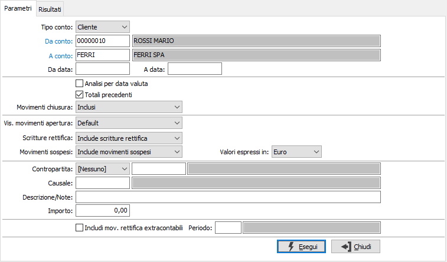
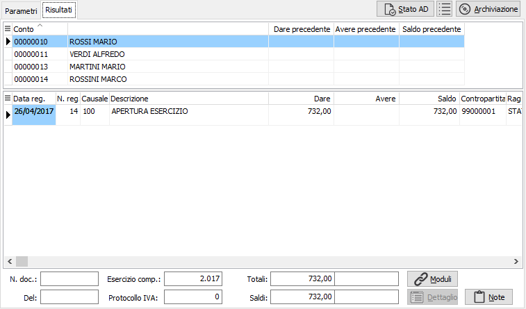
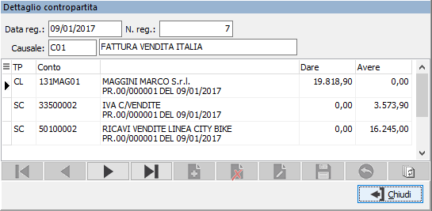
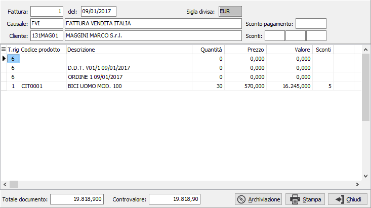
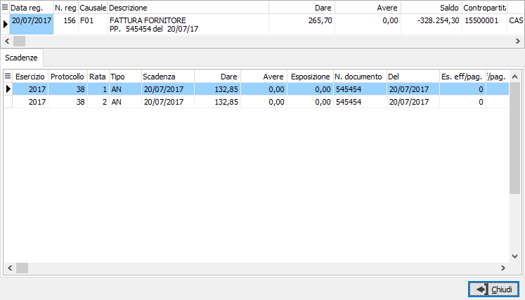

Analisi sottoconti
Il programma consente di visualizzare i movimenti di uno specifico sottoconto, entro due date indicate dall’utente.
Un cenno di spiegazione merita la questione dei totali precedenti, che assumono valori diversi in funzione dello stato dell’esercizio.
ESERCIZIO PRECEDENTE NON ESISTENTE O CHIUSO:
se non viene inserita alcuna data di inizio analisi, i totali precedenti hanno valore “0” e vengono visualizzati tutti i movimenti dell'esercizio in corso. Non vengono considerati i movimenti con data dell’esercizio in corso ma di competenza del precedente esercizio.
se viene inserita una data dell’esercizio in corso (diversa comunque dalla data di inizio esercizio contabile) come inizio analisi, nel rigo totali precedenti vengono visualizzati i totali dare e avere dei movimenti dall’inizio dell’esercizio al giorno precedente relativamente al sottoconto attivo. Non vengono considerati i movimenti con data dell’esercizio in corso ma di competenza del precedente esercizio.
se viene inserita come data di fine analisi la data di chiusura dell’esercizio contabile, vengono visualizzati anche i movimenti registrati con data successiva ma di competenza dell’esercizio esaminato.
ESERCIZIO PRECEDENTE ANCORA APERTO:
se non viene inserita alcuna data di inizio analisi, i totali precedenti hanno valore “0” solo per i conti economici, mentre per i conti patrimoniali viene presentato il totale dare e il totale avere dell’esercizio precedente. Vengono visualizzati tutti i movimenti dell'esercizio in corso. Non vengono presentati i movimenti con data dell’esercizio in corso ma di competenza del precedente esercizio il cui importo, nel caso dei conti patrimoniali, è tuttavia considerato nei totali precedenti.
se viene inserita una data dell’esercizio in corso (diversa comunque dalla data di inizio esercizio contabile) come inizio analisi, per i conti economici nel rigo totali precedenti vengono visualizzati i soli totali dare e avere dei movimenti dall’inizio dell’esercizio al giorno precedente, mentre per i conti patrimoniali i totali precedenti contengono anche il totale dare ed il totale avere dell’esercizio precedente. Non vengono presentati i movimenti con data dell’esercizio in corso ma di competenza del precedente esercizio il cui importo, nel caso dei conti patrimoniali, è tuttavia considerato nei totali precedenti.
È sempre possibile esaminare, con le stesse regole sui totali precedenti, i movimenti relativi ad esercizi precedenti semplicemente inserendo idonee date di inizio e fine analisi.
Accedendo al programma, compare la finestra video di selezione parametri:

TIPO CONTO: Indica la tipologia del conto utilizzato: sottoconti, clienti o fornitori. Anche se lasciato vuoto, sarà valorizzato automaticamente al momento della conferma del codice del conto.
DA CONTO: codice del sottoconto, presente in Anagrafica Sottoconti, da cui si desiderano iniziare l'analisi dei movimenti contabili. Sul campo è attivo lo zoom F9.
A CONTO: codice del sottoconto, presente in Anagrafica Sottoconti, con cui si desidera terminare l'analisi dei movimenti contabili. Sul campo è attivo lo zoom F9.
DA DATA: Indicare l’eventuale data da cui si desidera iniziare la visualizzazione dei movimenti contabili relativi al sottoconto indicato. Confermando a vuoto, l’analisi inizia dal primo movimento valido dell'esercizio corrente.
A DATA: Indicare l’eventuale data a cui si desidera terminare la visualizzazione dei movimenti contabili relativi al sottoconto indicato. Confermando a vuoto, l’analisi termina con l’ultimo movimento valido dell'esercizio corrente.
ANALISI PER DATA VALUTA: check box significativo solo per i sottoconti del conto Banche, se per gli stessi è stata gestita la data di valuta. Consente di ottenere una visualizzazione ordinata per data di valuta anzichè per data di registrazione.
TOTALI PRECEDENTI: check box, significativo quando la data di inizio selezione non corrisponde alla data di inizio esercizio, per definire la modalità di calcolo dei totali. La presenza della spunta determina la visualizzazione dei totali dare ed avere precedenti e il calcolo del saldo a partire da inizio esercizio; l’assenza della stessa determina invece il calcolo del saldo parziale ottenuto della totalizzazione dei soli movimenti visualizzati.
MOVIMENTI CHIUSURA: significativo solo se le date di selezione si riferiscono ad un esercizio già chiuso, per definire le modalità di trattamento dei movimenti di chiusura. E' possibile includere la visualizzazione di tali movimenti e determinare il calcolo di un saldo a zero; l’esclusione invece dei movimenti di chiusura, consentendo il calcolo del saldo del sottoconto prima delle operazioni di chiusura, oppure riportare solo i movimenti di chiusura.
VISUALIZZA MOVIMENTI APERTURA: definisce il criterio per cui saranno visualizzati o meno i movimenti di apertura; il parametro è significativo solo per chi non effettua l'apertura in data 01/01. Valori previsti:
Default: i movimenti saranno visualizzati solo se presenti nel periodo d'analisi richiesto (visualizzati con data del movimento).
Data inizio esercizio: i movimenti saranno visualizzati anche se successivi al periodo d'analisi richiesto (visualizzati con data inizio esercizio).
Data del movimento: i movimenti saranno visualizzati anche se successivi al periodo d'analisi richiesto (visualizzati con data del movimento).
SCRITTURE RETTIFICA: combo box per definire le modalità di trattamento di eventuali scritture di rettifica dell’esercizio precedente registrate nel corrente esercizio in date comprese fra le due date di selezione.
MOVIMENTI SOSPESI: combo box per definire le modalità di trattamento di eventuali movimenti sospesi registrati in date comprese fra le due date di selezione. I valori sono significativi solo per la versione Enterprise che consente di gestire tale tipo di transazione.
VALORI ESPRESSI IN: combo box per definire la divisa in cui visualizzare i movimenti selezionati.
CONTROPARTITA: consente di specificare un'eventuale contropartita a cui restringere l'analisi dei movimenti. Il campo è composto dal tipo e dal codice conto, sul quale sono disponibili le funzioni di ricerca (F9).
CAUSALE: consente di specificare un'eventuale causale contabile a cui restringere l'analisi dei movimenti. Sul campo sono disponibili le funzioni di ricerca (F9).
DESCRIZIONE/NOTE: consente di ricercare una parte di testo all'interno delle descrizioni e/o delle note presenti nei movimenti.
INCLUDI MOVIMENTI DI RETTIFICA EXTRACONTABILI/PERIODO: consente di includere i movimenti di rettifica extracontabili relativi ad un determinato periodo di bilancio o al periodo richiesto nel campo successivo al fine di avere una scheda contabile che quadra con il bilancio anche in presenza di movimenti di rettifica extracontabili.
A conferma selezione, tramite pressione del bottone Esegui, viene visualizzata la sezione video Risultati; nella parte superiore compaiono i sottoconti selezionati e nella parte inferiore i movimenti relativi al sottoconto su cui si è posizionati. Se presente l'archiviazione o la gestione allegati (OS1FileStore) sarà visibile ed attivo il pulsante Archiviazione che consente di analizzare il movimento corrente, il pulsante Stato AD per determinare lo stato dei movimenti visualizzati ed il pulsante della legenda di archiviazione.

Il pulsante Note consente di visualizzare le note estese del movimento.
Su qualsiasi rigo contabile è possibile, cliccando due volte su una qualsiasi informazione del rigo stesso, l’accesso interattivo al programma gestione prima nota per effettuare eventuali variazioni o semplicemente per visualizzare la registrazione contabile completa. Cliccando sulla colonna Contropartita sarà visualizzata una finestra nella quale sarà riportato il dettaglio dei conti del movimento con i relativi importi.

Sulle righe relative a documenti (fatture) è invece attivo il bottone Documento cliccando sul quale è possibile visualizzare il documento stesso ed eventualmente stamparlo tramite il pulsante stampa della finestra. Nel caso sia presenti il modulo di archiviazione documentale sarà presente un pulsante Visualizza per vedere il documento in originale.

Sulle righe è attivo il bottone Moduli cliccando sul quale è possibile visualizzare tutti i movimenti collegati al rigo contabile; in base al sottoconto ed ai moduli presenti potranno essere visibili movimenti di analitica, scadenze, progetti, conti correnti, cespiti ecc.
